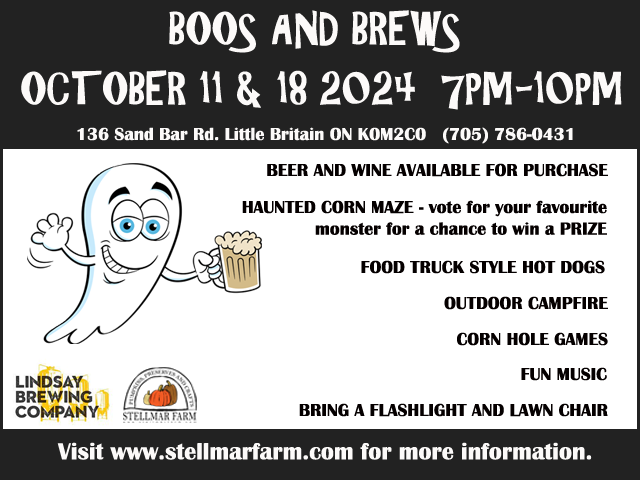

Friday Night Fright
Flashlight Corn Maze
For three nights, October 11, 18 (Boos and Brews) and 25 , you can come out from 7pm - 10pm and enjoy our spooky Corn Maze. There will be food truck style hot dogs, chips and pop for purchase. We will have an outdoor campfire and music. Make sure to bring a flashlight, a lawn chair and a strong heart!
On October 11th and 18th, we are pairing up with the Pie Eyed Monk brewery for Boos and Brews. They will be here with their Retro Beer wagon serving their delicious beverages.
Please note if it rains on Friday night the Fright Night will move to the Saturday night of that weekend. Check the website, Facebook or Instagram for updates. Note that there might not be beer and wines on the re-booked nights.